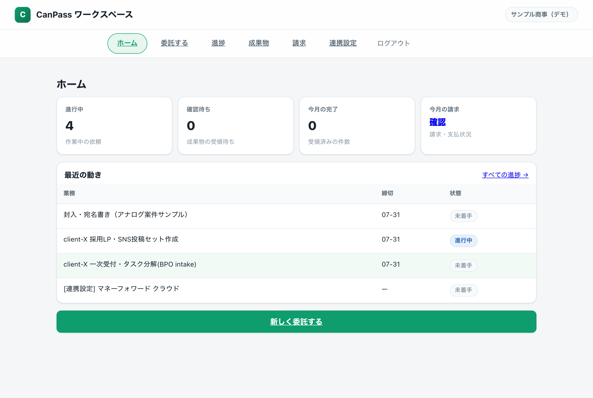
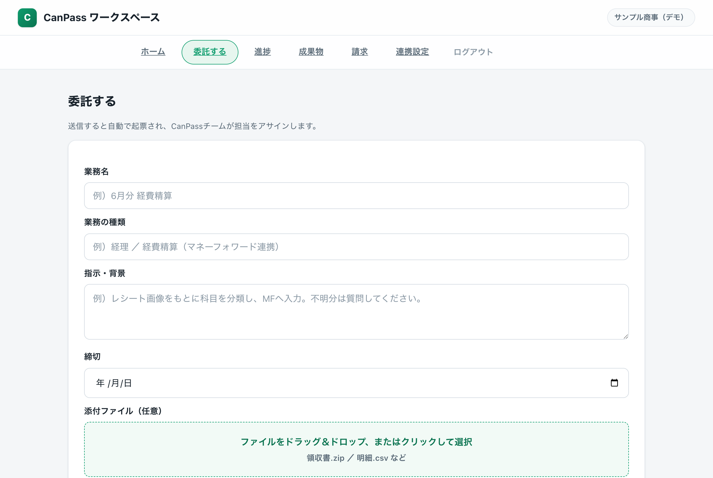
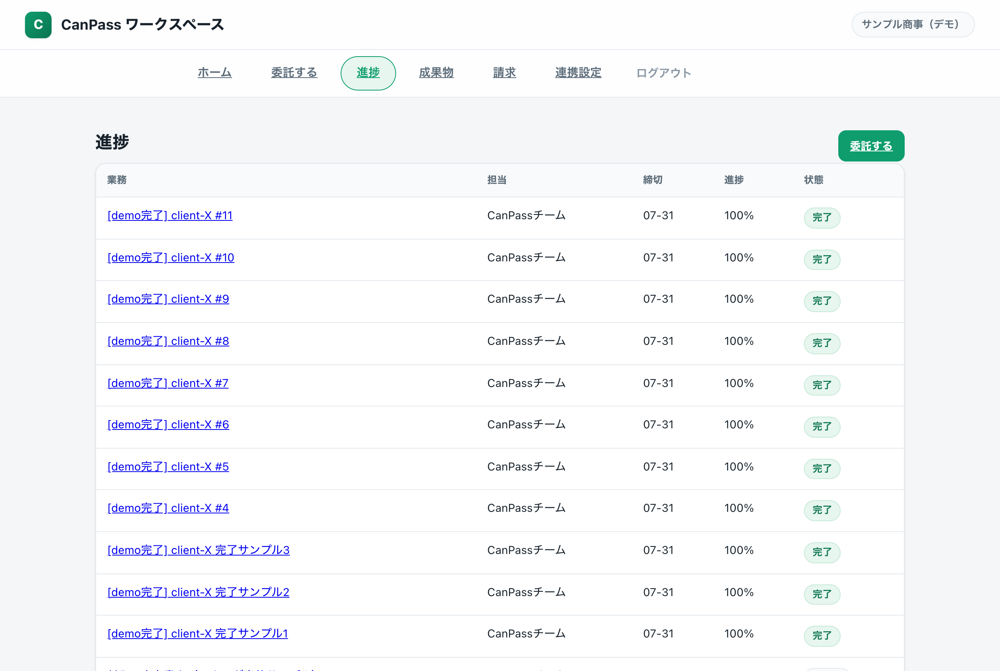
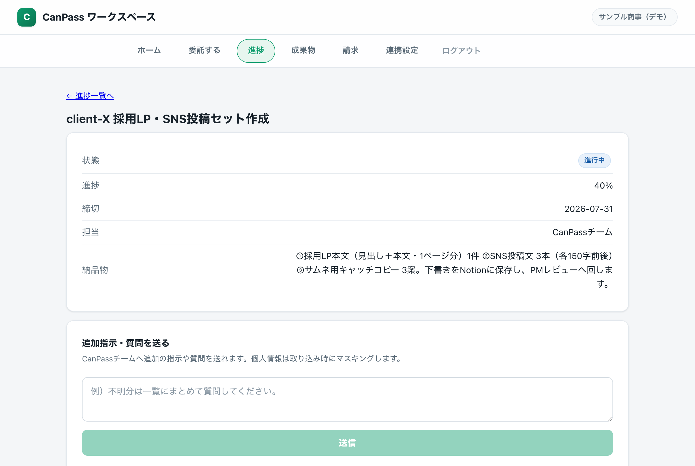
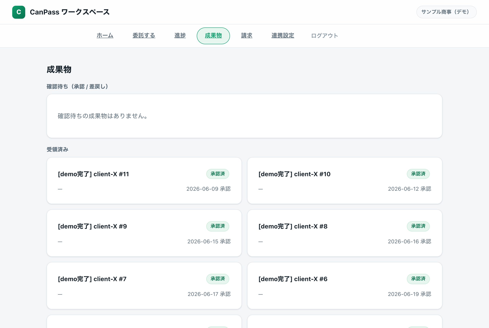
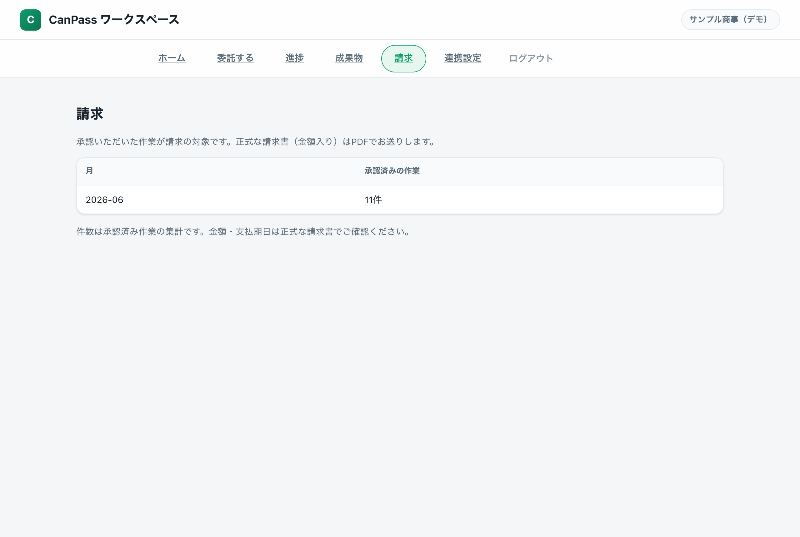
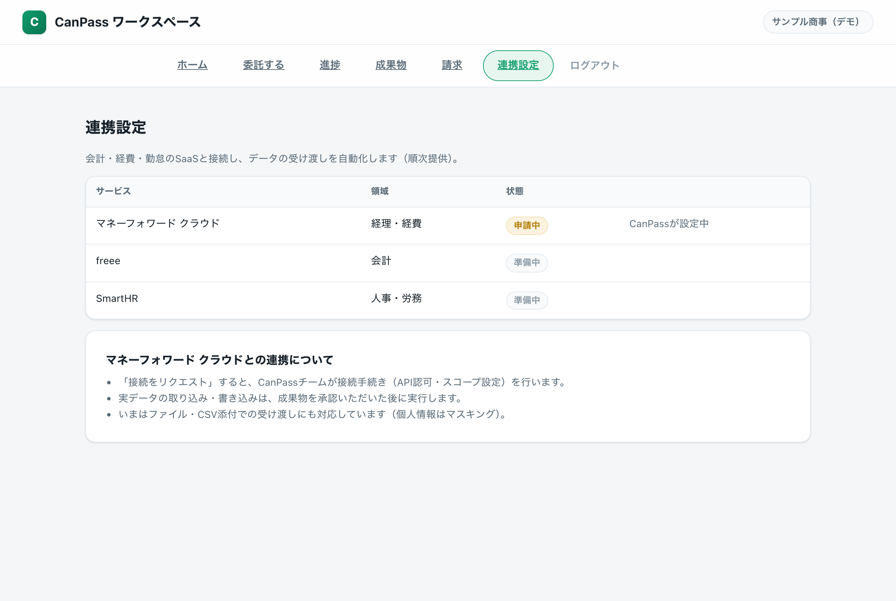

keiri@example.co.jp6bdw-t9a9-nk4c デモ用※ 招待制です。実際の顧客アカウントは担当のCanPassが発行します。データはデモ案件のサンプルです。
進行中・確認待ち・今月の完了・今月の請求をカードで表示。最近の動きに直近の依頼と状態が並びます。担当は「CanPassチーム」表示で、担い手個人の情報は出ません。

業務名・種類・指示・締切を書いて送るだけ。領収書やCSVを添付できます（個人情報は取り込み時にマスキング）。送信すると自動で起票され、CanPassチームが担当をアサインします。

依頼の担当・締切・進捗・状態を一覧表示。他社の案件は表示されません（サーバ側で自社案件に固定）。各行から詳細に進めます。

状態・進捗・締切・納品物を確認できます。追加の指示や質問をその場で送信でき、担当が受け取ります。社内の作業メモは表示しません。

できあがった成果物をダウンロードし、承認または差戻しを選べます。承認すると請求の対象に反映されます。SaaSへの書き込みは、承認の後に実行します。

承認いただいた作業を月ごとに集計して表示します。金額入りの正式な請求書はPDFでお送りします。

会計・経費・勤怠SaaSとの連携を申請できます。最初の対象はマネーフォワード クラウド。「接続をリクエスト」するとCanPassが接続手続き（API認可・スコープ設定）を行います。実データの取り込み・書き込みは承認の後です。
